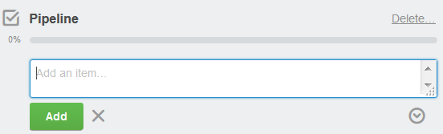

| Adding content to cards | |
Try to write short, intuitive and unique titles, for a fast overview and for efficient search results. You can reuse checklist items with the option Copy Items From.
The checklist is added to the card and you can start adding items.
XML Author